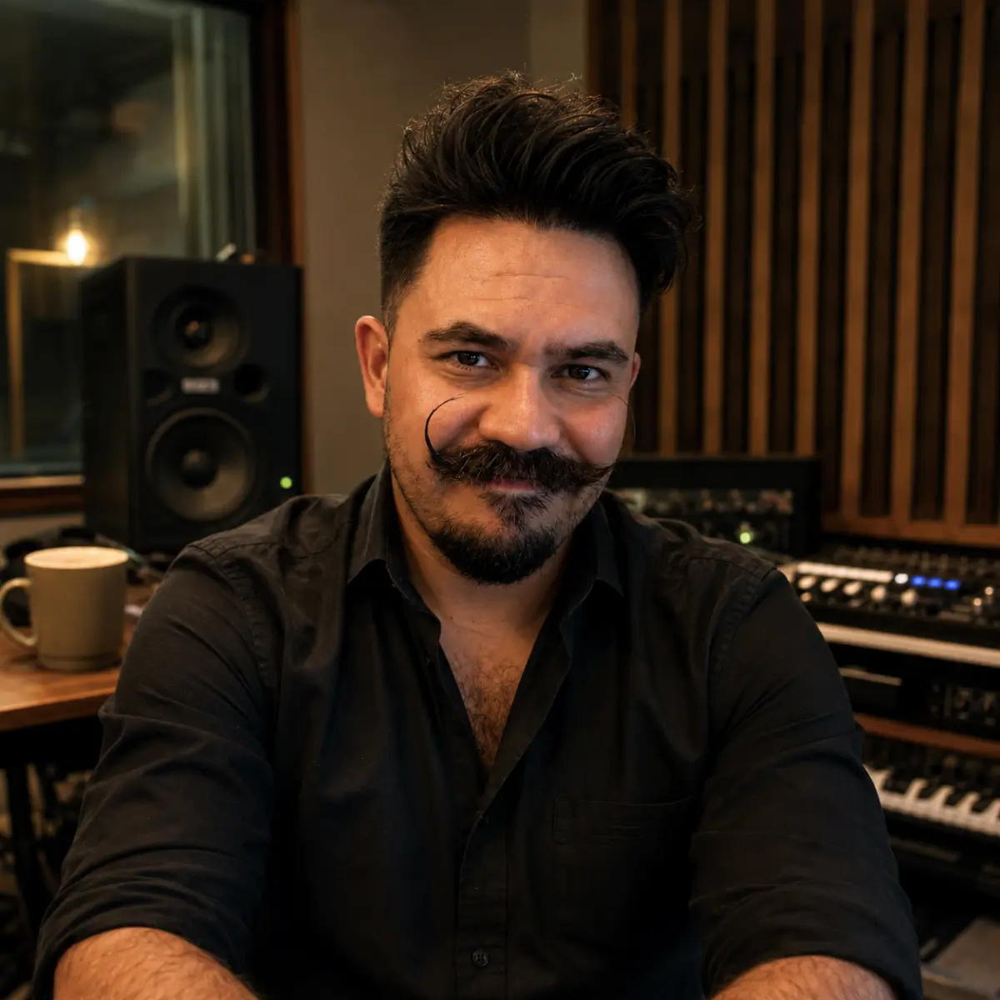
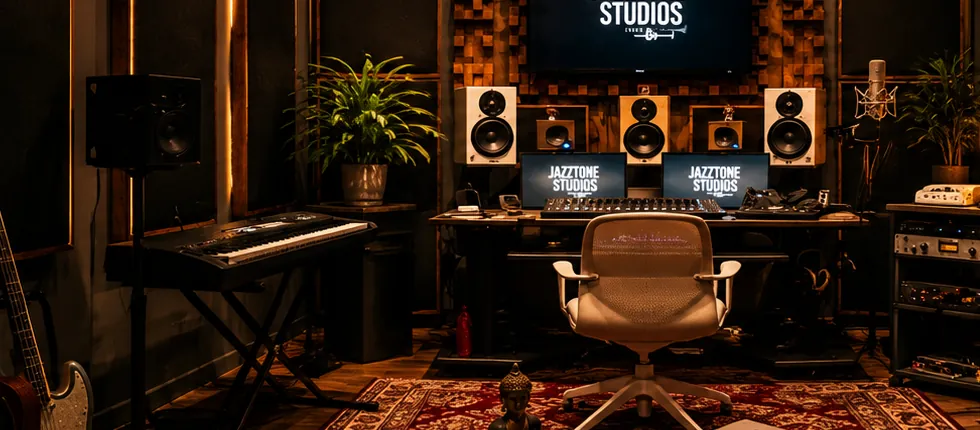

Formación musical · Valencia y online
Aprende música haciendo música.
Clases personalizadas de piano, composición, armonía y producción musical. En Valencia y online, desde tus primeras notas hasta tus propios proyectos.

01 / Por dónde empezar
¿Qué te gustaría conseguir?
02 / Áreas
Cinco áreas, una misma forma de enseñar.
Puedes centrarte en una o combinarlas: hay quien empieza por el piano y acaba escribiendo sus propias canciones.
Al piano Piano
Aprende a tocar, interpretar y acompañar la música que te gusta.
- Técnica
- Repertorio
- Improvisación
Estrofa · Estribillo · Puente
Composición y songwriting
Convierte tus ideas en canciones terminadas.
- Melodía
- Letra
- Estructura

Jazztone Studios, Valencia, donde trabajo como productor Producción musical
Lleva una canción de la idea a la grabación final.
- DAW
- Grabación
- Mezcla
ii · V · I
Armonía y teoría aplicada
Entiende por qué funciona la música que tocas y escuchas.
- Acordes
- Progresiones
- Análisis
Solicitar información: Armonía y teoría aplicada→Ver contenidos
- Intervalos, escalas y construcción de acordes
- Funciones armónicas y progresiones habituales
- Análisis de canciones de distintos estilos
- Rearmonización, voicings y oído
- Para quién
- Músicos que tocan de oído, cantantes, compositores y productores.
- Lo que consigues
- Sacar canciones de oído más rápido y usar la armonía con intención.
Más de diez años en la industria: sellos, una editorial musical y proyectos propios Carrera artística y negocio musical
Publica y gestiona tu música con criterio profesional.
- Lanzamientos
- Derechos
- Estrategia
Solicitar información: Carrera artística y negocio musical→Ver contenidos
- Identidad artística y plan de lanzamientos
- Distribución digital, metadatos y plataformas
- Derechos de autor, derechos conexos y publishing
- Marketing, presupuesto y gestión del proyecto
- Para quién
- Artistas independientes, bandas y equipos que gestionan su propia música.
- Lo que consigues
- Un plan de lanzamiento realista y criterio para decidir sobre tus derechos.
03 / Método
- 01
Partimos de ti.
Tu nivel, tus intereses y tus objetivos.
- 02
Aprendemos haciendo.
Cada concepto se convierte en práctica musical.
- 03
Trabajamos con música real.
Canciones, repertorio, grabaciones o proyectos propios.
04 / Sobre mí
Músico, compositor y productor.
Empecé a tocar el piano a los cuatro años y la música ha sido mi oficio desde entonces. En clase llevo lo que funciona en canciones reales.
- Formación
- Licenciatura en Producción Musical (REC Música) y máster en Global Entertainment and Music Business por Berklee College of Music.
- Trayectoria
- Pianista desde los cuatro años. 23 sencillos producidos para otros artistas, dirección musical de un ensamble de 11 músicos y música adicional para cuatro largometrajes.
- Docencia y presente
- Profesor de piano en MAP College of Music, Audio and Production. Hoy, productor en Jazztone Studios, en Valencia.
05 / Modalidades
Presencial, online o mentoría.
Presencial en Valencia
Clases individuales en un espacio adecuado a la especialidad, sujeto a disponibilidad.
Online
Sesiones en directo y trabajo práctico compartido.
Mentoría personalizada
Orientación sobre canciones, producciones y proyectos musicales.
- Sesiones de 60 minutos
- Español o inglés
- Tarifa confirmada por escrito antes de empezar
Preguntas frecuentes
Antes de empezar.
¿Necesito experiencia previa?
No. Empezamos desde tu nivel, sea cual sea.
¿Para qué edades son las clases?
Para niños, jóvenes y adultos. Con los más pequeños lo hablamos antes con la familia.
¿Qué necesito para empezar?
Para piano, un instrumento para practicar. Para producción, un ordenador, un DAW y auriculares. Te oriento antes de comprar nada.
¿Las clases online funcionan igual?
Sí. En producción compartimos pantalla; en piano, la cámara enfoca el teclado.
¿Cuánto cuestan las clases?
Depende del área y del formato. Te confirmo la tarifa por escrito antes de la primera clase.
06 / Consulta
Cuéntame qué quieres aprender.
Te respondo por correo con una propuesta para empezar.
¿Prefieres hablar antes?
Reserva una conversación en la agenda→